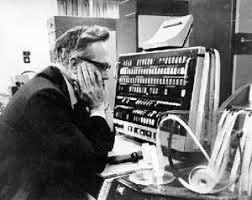

Kilburn was born in Dewsbury, England, 1921 and recieved his BA and MA in Mathematics at Cambridge University and finally got his PhD in Computer Research at Manchester University.He was also head of the Computer Science department at Manchester.
In 1947, he joined Frederic Calland Williams at the University of Manchester. They worked Together and created the Williams-Kilburn Tube, a Cathode-Ray Tube (used to display images)that when used as a storage device, prodivded the first computer memory with a lot of storage capacity at the time. The Williams-Kilburn Tube was first used in the Manchester Mark I prototype in 1948. Later it was used in the small Scale Experimental Machine(SSEM) nicknamed "Baby", It was the world's first working stored-program computer.The Williams-Kilburn tube became one of the two standard methods of storage used by computers worldwide until the development of magnetic-core storage in the mid-1950s.

In 1956 Kilburn started on a project called MUSE later renamed Atlas.The device went from being able to run a single program at a time which was the norm, to being able to multiprogram.Also,Atlas was the first computer to use virtual memory.
